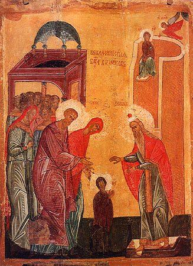

The Entry into the Temple of the Most Holy Theotokos according to Holy Tradition, this took place in the following manner. The parents of the Virgin Mary, Righteous Joachim and Anna, praying for an end to their childlessness, vowed that if a child were born to them, they would dedicate it to the service of God.
When the Most Holy Virgin reached the age of three, the holy parents decided to fulfill their vow. They gathered together their relatives and acquaintances, and dressed the All-Pure Mary in Her finest clothes. With the singing of sacred songs and with lighted candles in their hands, virgins escorted Her to the Temple (Ps. 44/45:14-15). There the High Priest and several priests met the handmaiden of God.
In the Temple, fifteen high steps led to the sanctuary, which only the priests and High Priest could enter. (Because they recited a Psalm on each step, Psalms 119/120-133/134 are called "Psalms of Ascent.") The child Mary, so it seemed, could not make it up this stairway. But just as they placed Her on the first step, strengthened by the power of God, She quickly went up the remaining steps and ascended to the highest one.
Then the High Priest, through inspiration from above, led the Most Holy Virgin into the Holy of Holies, where only the High Priest entered once a year to offer a purifying sacrifice of blood. Therefore, all those present in the Temple were astonished at this most unusual occurrence.
There are accounts in Church Tradition, that during the All-Pure Virgin's stay at the Temple, She grew up in a community of pious virgins, diligently read the Holy Scripture, occupied Herself with handicrafts, prayed constantly, and grew in love for God. In remembrance of the Entry of the Most Holy Theotokos into the Jerusalem Temple, Holy Church from ancient times established a solemn Feastday.
The decretals for the making of the Feast in the first centuries of Christianity are found in the traditions of Palestinian Christians, where mention is made that the holy Empress Helen built a church in honor of the Entry into the Temple of the Most Holy Theotokos.
St. Gregory of Nyssa, in the fourth century, mentions this Feast. In the eighth century Sts. Germanos and Tarasios, Patriarchs of Constantinople, delivered sermons on the Feast of the Entry.
The Feast of the Entry of the Most Holy Theotokos into the Temple foretells the blessing of God for the human race, the preaching of salvation, the promise of the coming of Christ.